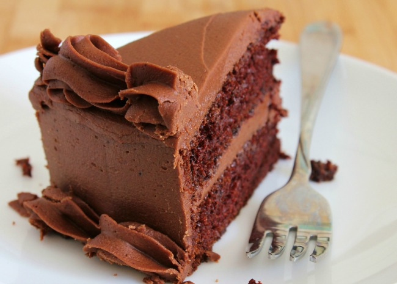

One Bowl Chocolate Cake

This is a rich and moist chocolate cake. It only takes a few minutes to prepare the batter. Frost with your favorite chocolate frosting.
Prep: 20 mins
Cook: 30 mins
Additional: 10 mins
Total: 1 hr
Servings: 24
Yield: 2-9 inch round cake layers
Ingredients
2 cups white sugar
1¾ cups all-purpose flour
¾ cup unsweetened cocoa powder
1 ½ teaspoons baking powder
1 ½ teaspoons baking soda
1 teaspoon salt
2 eggs
1 cup milk
½ cup vegetable oil
2 teaspoons vanilla extract
1 cup boiling water
Steps
- Preheat oven to 350 degrees F (175 degrees C). Grease and flour two nine inch round pans.
- In a large bowl, stir together the sugar, flour, cocoa, baking powder, baking soda and salt. Add the eggs, milk, oil and vanilla, mix for 2 minutes on medium speed of mixer. Stir in the boiling water last. Batter will be thin. Pour evenly into the prepared pans.
- Bake 30 to 35 minutes in the preheated oven, until the cake tests done with a toothpick. Cool in the pans for 10 minutes, then remove to a wire rack to cool completely.
Nutrition Facts
Per Serving:
157 calories; protein 2.3g; carbohydrates 25.7g; fat 5.7g; cholesterol 16.3mg; sodium 217.1mg.